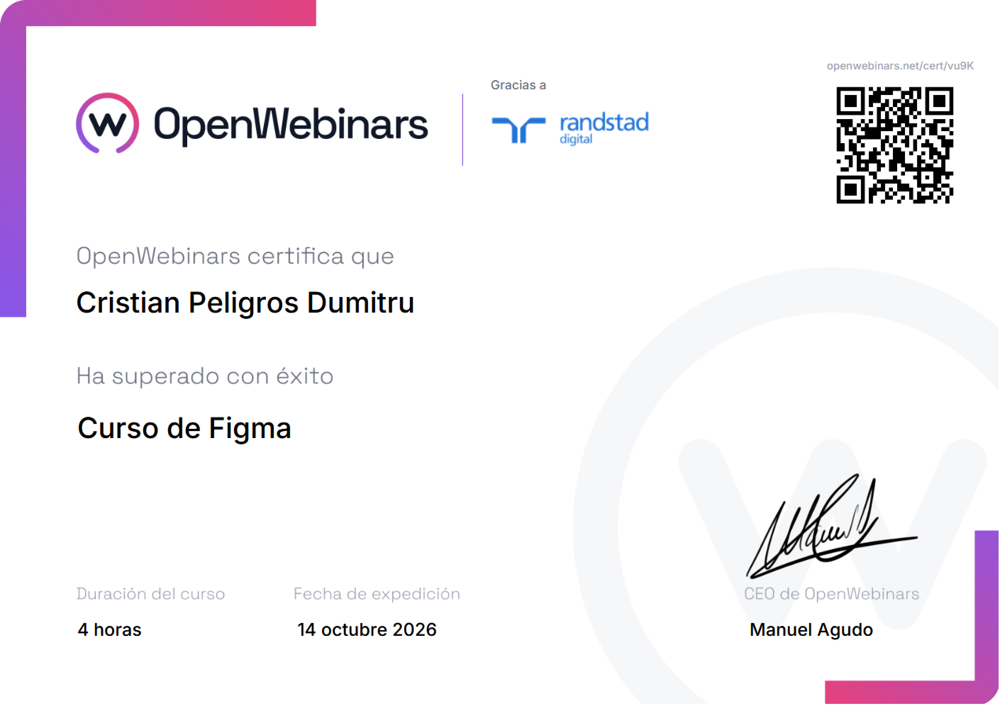
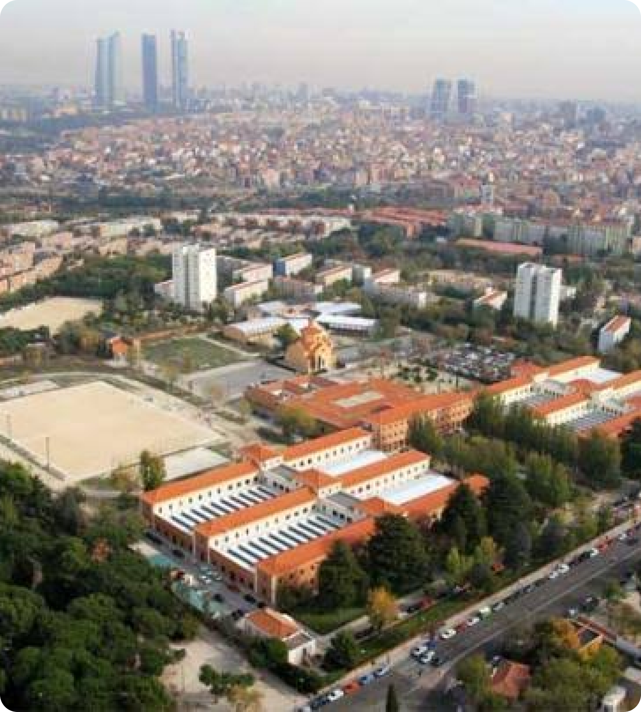

Mi instituto IES Tetuán de las Victorias

Titulo más reciente: Curso para aprender el uso de Figma y con ello hacer interfaces Profesionales.
Estudie este grado para poder pasar al superior de DAW, que estudio ahora, en este aparte de entender el funcionamiento de redes y toda la materia teorica que se da, tuve practicas en el mismo centro y en varios de la comunidad de madrid, reparando Equipos, resolviendo problemas de HW y SF, ademas de aprender como funciona un servidor como hacer volcado de ips y el rendimiento que se a de conservar para el buen funcionamiento de la empresa.
